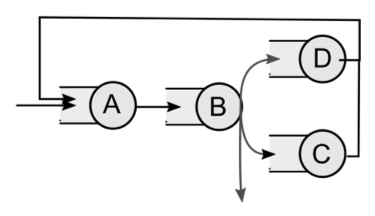

layout: true <div class="my-header"> <svg height="15" width="18" viewBox="0 0 24 24"xmlns="http://www.w3.org/2000/svg" style="fill: #ffffff; margin-left:4px;" role="img"><title>Sesiones prácticas</title> <span>Cuarta Sesión</span> <a href="mailto:isaac.lera@uib.es" style="float: right; margin-right: 10px;"> <svg class="svg-icon" viewBox="0 0 20 20" height="18" width="20" style="fill: #ffffff;" alt="Email me" > <path d="M17.388,4.751H2.613c-0.213,0-0.389,0.175-0.389,0.389v9.72c0,0.216,0.175,0.389,0.389,0.389h14.775c0.214,0,0.389-0.173,0.389-0.389v-9.72C17.776,4.926,17.602,4.751,17.388,4.751 M16.448,5.53L10,11.984L3.552,5.53H16.448zM3.002,6.081l3.921,3.925l-3.921,3.925V6.081z M3.56,14.471l3.914-3.916l2.253,2.253c0.153,0.153,0.395,0.153,0.548,0l2.253-2.253l3.913,3.916H3.56z M16.999,13.931l-3.921-3.925l3.921-3.925V13.931z"></path> </svg> </a> <a href="https://github.com/wisaaco/GEIN-ACSI-SA" style="float: right; margin-right: 5px;"> <svg height="15" width="15" style="fill: #ffffff;" alt="Github" viewBox="0 0 24 24" xmlns="http://www.w3.org/2000/svg"> <path d="M12 .297c-6.63 0-12 5.373-12 12 0 5.303 3.438 9.8 8.205 11.385.6.113.82-.258.82-.577 0-.285-.01-1.04-.015-2.04-3.338.724-4.042-1.61-4.042-1.61C4.422 18.07 3.633 17.7 3.633 17.7c-1.087-.744.084-.729.084-.729 1.205.084 1.838 1.236 1.838 1.236 1.07 1.835 2.809 1.305 3.495.998.108-.776.417-1.305.76-1.605-2.665-.3-5.466-1.332-5.466-5.93 0-1.31.465-2.38 1.235-3.22-.135-.303-.54-1.523.105-3.176 0 0 1.005-.322 3.3 1.23.96-.267 1.98-.399 3-.405 1.02.006 2.04.138 3 .405 2.28-1.552 3.285-1.23 3.285-1.23.645 1.653.24 2.873.12 3.176.765.84 1.23 1.91 1.23 3.22 0 4.61-2.805 5.625-5.475 5.92.42.36.81 1.096.81 2.22 0 1.606-.015 2.896-.015 3.286 0 .315.21.69.825.57C20.565 22.092 24 17.592 24 12.297c0-6.627-5.373-12-12-12"></path> </svg> </a> </div> <div class="my-footer"> <p> 2021 - Isaac Lera - CC BY license </p> </div> --- class: center, middle ### ACSI # Cuarta sesión práctica ### por Isaac Lera --- # Análisis operacional --- <img class="work" src="icons/bookmark-star-fill.svg" alt="TODO" width="100" height="100" title="Bookmark"/> ## Actividad 1. I Tenemos los siguientes datos recogidos a partir de la observación de un sistema con dos estaciones: .pure-table.pure-table-bordered.pure-table-striped.smaller-font[ | Estación | Tiempo servicio | |----------|-----------------| | A | 2 | | B | 4 | ] Clientes que entrarón en un ciclo y recorrieron dicha secuencia de estaciones: .pure-table.pure-table-bordered.pure-table-striped.smaller-font[ | Cliente | Ciclo de Entrada | Secuencia de solicitudes | |-----------------|---------------------------|------------------------------| | Cliente0 | 1 | X | | Cliente1 | 2 | X | | Cliente2 | 2 | X | | Cliente3 | 2 | X | | Cliente4 | 3 | XY | | Cliente5 | 4 | XX | | Cliente6 | 6 | XX | | Cliente7 | 6 | XY | ] .right[continua] --- ## Actividad 1. II ### Datos a partir de la observación Se pide: - Dibuja el modelo de red (estaciones y conexiones) - La productividad de cada estación/servidor - La productividad global del sistema - El tiempo medio de respuesta de cada estación - El tiempo medio de respuesta del sistema - El tiempo medio de espera en la cola de cada estación - El tamaño máximo de la cola de cada estación - El número medio de clientes en cada estación - El número medio de clientes en el sistema --- ## Actividad 2. ### Leyes Un servidor web cuenta con una capacidad de 8gb de memoria. Cada petición web que atiende requiere de 4mb. Si recibe 3500 peticiones por segundo y cada petición requiere 0.2 ms de servicio web. Se pide: - ¿Cuántas peticiones residen de media en el servidor web? (¿formula?) - ¿Cuál es su consumo total de memoria? - ¿Cuál es el grado de utilización de la memoria? --- ## Actividad 3. ### Leyes La utilización de un servidor es del 84% y cada petición requiere de 10s de servicio, ¿Cuál es la productividad del sistema? Si sabemos que el sistema se ha controlado durante 3h, ¿cuántos trabajos se han realizado? --- ## Actividad 4. ### Leyes Restaurante *Chikot* ofrece un servicio de comida **irrepetible**. Cuando un cliente entra en su sistema ya no vuelve a repetir. Su tasa de clientes es de 10 al día. Cada cliente requiere de sus servicios 90 minutos y tienen un tiempo de respuesta de 2 horas. - ¿Cuántos usuarios podemos encontrar de media en el restaurante? - ¿Cuántos están esperando a ser atendidos? --- ## Actividad 5. ### Leyes Una empresa se ha observado durante 30 días. La plantilla de la empresa tiene 20 usuarios, cada usuario solicita de media un servicio 3 veces por minuto. Entre cada petición, el usuario suele analizar la respuesta de media 15s y sabemos que el número medio de usuarios que suelen estar analizando es de 19,25. ¿Cuál es el tiempo de respuesta del sistema? Si el tiempo de servicio es de 16s ¿Cuál es la utilización del sistema? Si el número de trabajadores aumenta a 40 usuarios: ¿cuál sería el tiempo de respuesta? ¿y el tiempo de espera? --- ## Actividad 6. ### Leyes Un clúster con 20 equipos genera cada uno de ellos 232 peticiones/s en un único servidor, el tiempo de servicio es de 0.22s. - ¿Cuál es la utilización del servidor? - ¿Cuántos servidores habría que instalar para que el sistema fuera estable, con un reparto equitativo de peticiones? (un escalado de equipos con un balanceador de carga) --- ## Actividad 7. I Se está estudiando incorporar un balanceador de carga (estación B, figura adjunta) a un sistema modelo servidor central (siendo A la estación máster y D-E las estaciones “secundarias”) para evitar que la estación máster haga tareas de planificación y enrutamiento.  Sabemos lo siguiente del sistema original (solo estaciones A, D y C) Frecuencia de llegada: 0,005 pet/s .pure-table.pure-table-bordered.pure-table-striped.smaller-font[ | Estación | Servicio (s) | Visitas | |-----------------|-----------------------|----------------| | A | 5 | 14 | | D | 20 | 8 | | C | 10 | 5 | ] .right[continua] --- ## Actividad 7. II Introducciendo el balenceador de carga, los números observados son los siguientes: .pure-table.pure-table-bordered.pure-table-striped.smaller-font[ | Estación | Servicio (s) | Visitas | |-----------------|-----------------------|----------------| | A | 3 | ¿? | | B | 0.1 | ¿? | | D | 20 | 4 | | C | 10 | 9 | ] Se pide: - **¿Cuál es la aceleración al haber introducido el balanceador de carga?** - **¿Cómo afecta el balanceador a la productividad?** --- background-color: #eeeeee class: center, middle # - Fin de la cuarta sesión - <a href="SA5.pdf"> <svg id="move" class="svg-icon" viewBox="0 0 24 24" height="80" width="80" alt="Siguiente Tema"> <g> <path fill="#aaaaaa" d="m7.83 3.404 1.741-2.909c-0.204-0.088-0.421-0.151-0.658-0.151-0.954 0-1.728 0.774-1.728 1.728 0 0.541 0.256 1.015 0.645 1.332z"/> <path fill="#aaaaaa" d="m19.645 12.002-0.464-0.31c-0.09-1.505-0.628-2.972-1.575-4.187l-1.212 0.156 0.084-0.125c0.316-0.473 0.188-1.119-0.286-1.435l-0.675-0.451c-0.473-0.316-1.119-0.187-1.435 0.286l-0.095 0.142-0.538-3.219-3.271-2.033-1.754 2.93 0.86 0.481-6.244-0.792-0.904 1.353 3.766 2.516c-0.17 0.204-0.333 0.414-0.484 0.639-0.149 0.225-0.281 0.457-0.405 0.692l-3.766-2.516-0.903 1.353 4.878 8.537 8e-3 -0.013c0.098 0.164 0.207 0.322 0.317 0.479l1.628-0.209-0.302 0.452c-0.316 0.473-0.187 1.119 0.286 1.435l0.675 0.451c0.473 0.316 1.119 0.188 1.435-0.286l0.252-0.378 0.185 1.442c1.418 0.385 2.904 0.334 4.273-0.105l0.552 0.369c1.512-0.533 2.87-1.542 3.829-2.977 0.96-1.435 1.372-3.077 1.285-4.677zm-5.555 4.053c-0.106 0.158-0.32 0.201-0.478 0.095s-0.201-0.32-0.095-0.478 0.32-0.201 0.478-0.095c0.158 0.105 0.201 0.319 0.095 0.478zm-0.121-2.391c-0.513 0.769-1.371 1.227-2.296 1.227-0.546 0-1.075-0.161-1.531-0.465-1.265-0.845-1.606-2.561-0.762-3.826 0.513-0.768 1.372-1.227 2.297-1.227 0.545 0 1.074 0.161 1.53 0.465 1.265 0.845 1.607 2.562 0.762 3.826zm1.096 3.812c-0.106 0.158-0.32 0.201-0.478 0.095s-0.201-0.32-0.095-0.478 0.32-0.201 0.478-0.095c0.159 0.106 0.201 0.32 0.095 0.478zm0.269-2.708c-0.106 0.158-0.32 0.201-0.478 0.095s-0.201-0.32-0.095-0.478 0.32-0.201 0.478-0.095 0.201 0.32 0.095 0.478zm0.234-1.546c-0.158-0.106-0.201-0.32-0.095-0.478s0.32-0.201 0.478-0.095 0.201 0.32 0.095 0.478-0.32 0.2-0.478 0.095zm1.097 2.436c-0.106 0.158-0.32 0.201-0.478 0.095s-0.201-0.32-0.095-0.478 0.32-0.201 0.478-0.095 0.201 0.319 0.095 0.478zm1.068-2.175c-0.106 0.158-0.32 0.201-0.478 0.095s-0.201-0.32-0.095-0.478 0.32-0.201 0.478-0.095 0.201 0.32 0.095 0.478z"/> <path fill="#aaaaaa" d="m12.824 10.412c-0.341-0.228-0.738-0.349-1.146-0.349-0.694 0-1.338 0.344-1.723 0.92-0.634 0.949-0.377 2.236 0.571 2.869 0.342 0.228 0.739 0.35 1.147 0.35 0.694 0 1.337-0.344 1.722-0.92 0.634-0.95 0.378-2.237-0.571-2.87z"/> </g> <g id="colorani" class="hide" stroke-width=".26458px"> <path d="m15.111 19.771c4.6939-1.637 5.1282-6.7486 5.1282-6.7486"/> <path d="m16.096 19.838c4.2262-2.0713 4.3431-5.479 4.3431-5.479"/> <path d="m16.965 19.888c3.4912-1.921 3.7251-4.5102 3.7251-4.5102"/> <path d="m18.168 19.788c2.205-1.3029 2.656-3.2072 2.656-3.2072"/> <path d="m19.07 19.838c1.8208-0.7684 2.0212-2.3219 2.0212-2.3219"/> <path d="m20.239 19.855c0.98556-0.96885 1.0023-1.1693 1.0023-1.1693"/> </g> </svg> </a>